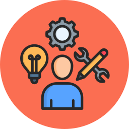
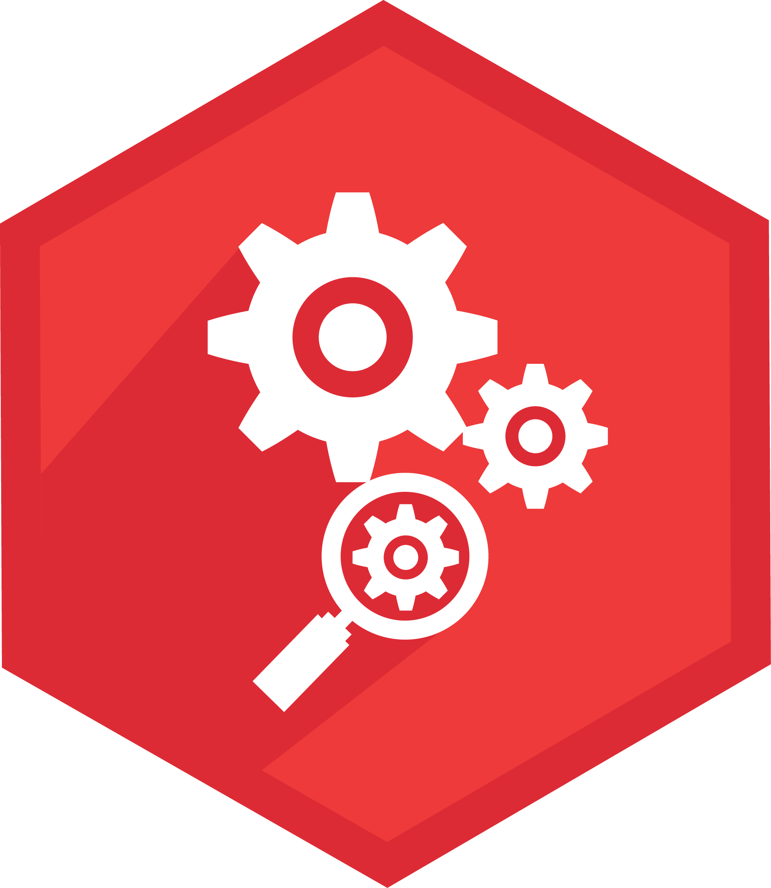

EXPERIENCE
- Fidelity International
- Programmer (September 2023 – Present)
- Developed a comprehensive integration test suite framework leveraging AWS Services including (Lambda, DynamoDB, S3), Python and Terraform to automate the integration tests , deployed across 30+ repositories.The deployment process was streamlined using AWS CodePipeline for continuous delivery.This improved our testing efficiency by 40% and reduced integration issues in production environments by 30%.
- Upgraded Terraform modules for AWS services across 70+ repositories, that enhanced infrastructure management and performance by 25% through faster deployment times and improved resource utilization.
- Led LUSID-SDK and Python version upgrades, addressing breaking changes in 50+ repositories to ensure stability and library compatibility. This effort resulted in improved application performance by 20%, facilitating smoother development workflows.
- Graduate Programmer (August 2022 – August 2023)
- Contributed to the ‘Organization Mapping’ project by utilizing FastAPI and the Neo4j graph database to develop a system for managing and visualizing complex organizational relationships, resulting in a 40% increase in efficiency for Business Analysts and other stakeholders in accessing critical insights.
- IIT Indore
- Research Intern (June 2021 – July 2021)
- Utilized SILVACO software to design hardware models for solar cells,incorporating various materials and adjusting parameters to optimize performance. Analyzed solar cell efficiency using SCAPS software by studying multiple research papers and conducting simulations to determine the most efficient configurations and able to achieve 20% efficiency.
 SKILLS
- Languages: Python, SQL
- Technologies: AWS (EC2, Lambdas, SQS, SNS, DynamoDB, AWS CodePipeline), Neo4j graph database, Docker
- Tools & Frameworks: Git, GitHub, Pandas, FastAPI, Jenkins, VS Code, PyCharm
 PROJECTS
- Sports-Data-Platform GitHub
- CICD Project (December 2023) || Python, MySql, Docker, Jenkins
- Developed a comprehensive sports data platform using FastAPI and MySQL, enabling seamless CRUD operations to manage data in real-time for multiple sports, leagues, tournaments, and historical winners.
- Enabled users to upload favorite sports data via a predefined CSV structure, enhancing flexibility and user engagement.
- Deployed the application using Jenkins, automated its conversion into Docker images, and published them on Docker Hub for streamlined deployment and scalability.
- Smart Irrigation System Link
- Final Year Project (January 2022) || C programming, Arduino, Sensors, Proteus simulation software
- Developed a low-cost automated smart irrigation system using C programming on an Arduino microcontroller, integrating real-time data from soil moisture and optional environmental sensors (temperature, humidity, light). The system automated irrigation based on predefined thresholds, optimizing water usage and promoting plant health.
EDUCATION
- Sant Longowal Institute of Engineering and Technology (2019 – 2022)
- B.E in Electronics and Communication Engineering (CGPA: 9.06)
- Sant Longowal Institute of Engineering and Technology (2016 – 2019)
- Diploma in Electronics and Communication Engineering (CGPA: 9.4)
- Rose Public School
 Certifications
Certifications
- IIT Indore Internship (July 2021)
- BSNL IN-Plant Training, Four Weeks (June 2018)